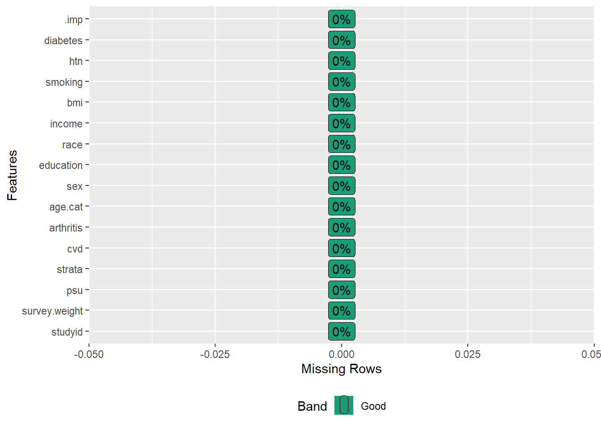

PSM with MI in subset
Problem
In this chapter, we will use propensity score matching (PSM) with multiple imputation, focusing on specific subpopulations defined by the study’s eligibility criteria. We will use PSM as per DuGoff, Schuler, and Stuart (2014) recommendation, with SMD cut-point 0.2 and adjust for imbalanced and/or all covariates in the outcome model, if any.
The modified dataset from NHANES 2017- 2018, which was also used in missing data subpopulations chapter, will be used. This example aims to demonstrate how to do the missing data analysis using multiple imputation with PSM in the context of complex surveys.
Pre-processing
Load data
Let us import the dataset:
Variables
The dataset (dat.full) contains 9,254 subjects with 15 variables:
Survey information
-
studyid: Respondent sequence number -
survey.weight: Full sample 2 year interview weight -
psu: Masked pseudo PSU -
strata: Masked pseudo strata
Outcome variable
-
cvd: Whether having cardiovascular disease
Exposure variable
-
rheumatoid: Whether having rheumatoid arthritis
Covariates
-
age: age in years at screening sexeducation-
race: Race/Ethnicity -
income: Family income in $ -
bmi: Body Mass Index in kg/m\(^2\) -
smoking: Smoking status -
htn: Having hypertension -
diabetes: Having diabetes
Data pre-processng
# Categorical age
dat.full$age.cat <- with(dat.full, ifelse(age >= 20 & age < 50, "20-49",
ifelse(age >= 50 & age < 65, "50-64", "65+")))
dat.full$age.cat <- factor(dat.full$age.cat, levels = c("20-49", "50-64", "65+"))
table(dat.full$age.cat, useNA = "always")
#>
#> 20-49 50-64 65+ <NA>
#> 2500 1569 5185 0
# Recode rheumatoid to arthritis
dat.full$arthritis <- car::recode(dat.full$rheumatoid, " 'No' = 'No arthritis';
'Yes' = 'Rheumatoid arthritis' ", as.factor = T)
table(dat.full$arthritis, useNA = "always")
#>
#> No arthritis Rheumatoid arthritis <NA>
#> 3857 337 5060Subsetting according to eligibility
We will create the analytic dataset with
- adults aged 20 years or more
- without missing values in outcome (cvd) or exposure (rheumatoid arthritis).
# Drop < 20 years
dat.with.miss <- subset(dat.full, age >= 20)
# Frequency for outcome and exposure
table(dat.with.miss$cvd, useNA = "always") # 6 missing
#>
#> No Yes <NA>
#> 4872 691 6
table(dat.with.miss$rheumatoid, useNA = "always") # 1375 missing
#>
#> No Yes <NA>
#> 3857 337 1375
# Drop missing in outcome and exposure - dataset with missing values only in covariates
dat.analytic <- dat.with.miss[complete.cases(dat.with.miss$cvd),]
dat.analytic <- dat.analytic[complete.cases(dat.analytic$rheumatoid),]
nrow(dat.analytic)
#> [1] 4191We have 4,191 participants in our analytic dataset. The general strategy of solution to implement PSM with MI is as follows:
- We will build the imputation model on 4,191 eligible subjects, and
- Apply PSM on each of the imputed datasets, where we will utilize survey features for population-level estimate
- Pool the estimates using Rubin’s rule
variable summary
Let us see the summary statistics as we did in the missing data analysis:
# Keep only relevant variables
vars <- c("studyid", "survey.weight", "psu", "strata", "cvd", "arthritis", "age.cat",
"sex", "education", "race", "income", "bmi", "smoking", "htn", "diabetes")
dat.analytic2 <- dat.analytic[, vars]
# Create Table 1
vars <- c("arthritis", "age.cat", "sex", "education", "race", "income", "bmi", "smoking",
"htn", "diabetes")
tab1 <- CreateTableOne(vars = vars, strata = "cvd", data = dat.analytic2, includeNA = F,
addOverall = T, test = F)
print(tab1, format = "f", showAllLevels = T)
#> Stratified by cvd
#> level Overall No
#> n 4191 3823
#> arthritis No arthritis 3854 3580
#> Rheumatoid arthritis 337 243
#> age.cat 20-49 2280 2240
#> 50-64 1097 979
#> 65+ 814 604
#> sex Male 2126 1884
#> Female 2065 1939
#> education Less than high school 828 728
#> High school 2292 2094
#> College graduate or above 1063 993
#> race White 1275 1113
#> Black 998 898
#> Hispanic 1015 958
#> Others 903 854
#> income less than $20,000 659 557
#> $20,000 to $74,999 1967 1796
#> $75,000 and Over 1143 1079
#> bmi (mean (SD)) 29.28 (7.19) 29.20 (7.18)
#> smoking Never smoker 2570 2427
#> Previous smoker 882 726
#> Current smoker 739 670
#> htn No 1424 1380
#> Yes 2415 2107
#> diabetes No 3622 3396
#> Yes 566 424
#> Stratified by cvd
#> Yes
#> n 368
#> arthritis 274
#> 94
#> age.cat 40
#> 118
#> 210
#> sex 242
#> 126
#> education 100
#> 198
#> 70
#> race 162
#> 100
#> 57
#> 49
#> income 102
#> 171
#> 64
#> bmi (mean (SD)) 30.09 (7.29)
#> smoking 143
#> 156
#> 69
#> htn 44
#> 308
#> diabetes 226
#> 142Dealing with missing values in covariates
Similar to the previous exercise, we will create 5 imputed datasets with 3 iterations, and the predictive mean matching method for bmi and income. We will use the strata variable as an auxiliary variable in the imputation model but not the survey weight or PSU variable.
Step 0: Set up the imputation model
# Step 0: Set imputation model
ini <- mice(data = dat.analytic2, maxit = 0, print = FALSE)
pred <- ini$pred
# Use the strata variable as an auxiliary variable in the imputation model
pred["strata",] <- 0
# Do not use survey weight or PSU variable as auxiliary variables
pred[,"studyid"] <- pred["studyid",] <- 0
pred[,"psu"] <- pred["psu",] <- 0
pred[,"survey.weight"] <- pred["survey.weight",] <- 0
# Set imputation method
meth <- ini$meth
meth["bmi"] <- "pmm"
meth["income"] <- "pmm"
meth
#> studyid survey.weight psu strata cvd
#> "" "" "" "" ""
#> arthritis age.cat sex education race
#> "" "" "" "polyreg" ""
#> income bmi smoking htn diabetes
#> "pmm" "pmm" "" "logreg" "logreg"Step 1: Imputing missing values using mice for eligible subjects
Let us save the datasets.
Now we will combine m = 5 datasets and create a stacked dataset. This dataset should contain 5*4,191 = 20,955 rows.
#Remove .id variable from the model as it was created in an intermediate step
impdata$.id <- NULL
# Number of subjects
nrow(impdata)
#> [1] 20955
# Missing after imputation
DataExplorer::plot_missing(impdata)
There is no missing value after imputation. There is an additional variable (.imp) in the imputed dataset, which goes from 1 to m = 5, indicating the first to the fifth imputed datasets.
Step 2: PSM steps 1-3 by DuGoff et al. (2014)
Our next step is to use steps 1-3 of the PSM analysis:
- Step 2.1: Fit the PS model by considering survey features as covariates.
- Step 2.2: Match an exposed subject without replacement within the caliper of 0.2 times the standard deviation of the logit of PS.
- Step 2.3: Balance checking using SMD. Consider SMD <0.2 as a good covariate balancing.
Step 2.1: PS model specification
Step 2.2: Estimating PS and matching for each imputed dataset
# Null vector or list to store values
caliper <- NULL
dat.matched <- match.obj <- list(NULL)
m <- 5 # 5 imputed dataset
# PSM on each of the imputed datasets
for (ii in 1:m) {
# Imputed dataset
dat.imputed <- subset(impdata, .imp == ii)
# Propensity scores
ps.fit <- glm(ps.formula, data = dat.imputed, family = binomial("logit"))
dat.imputed$ps <- fitted(ps.fit)
# Caliper fixing to 0.2*sd(logit of PS)
caliper[ii] <- 0.2*sd(log(dat.imputed$ps/(1-dat.imputed$ps)))
# 1:1 PS matching
set.seed(504)
match.obj[[ii]] <- matchit(ps.formula, data = dat.imputed,
distance = dat.imputed$ps,
method = "nearest",
replace = FALSE,
caliper = caliper[ii],
ratio = 1)
dat.imputed$ps <- match.obj[[ii]]$distance
# Extract matched data
dat.matched[[ii]] <- match.data(match.obj[[ii]])
}
match.obj
#> [[1]]
#> A matchit object
#> - method: 1:1 nearest neighbor matching without replacement
#> - distance: User-defined [caliper]
#> - caliper: <distance> (0.021)
#> - number of obs.: 4191 (original), 668 (matched)
#> - target estimand: ATT
#> - covariates: age.cat, sex, education, race, income, bmi, smoking, htn, diabetes, psu, strata, survey.weight
#>
#> [[2]]
#> A matchit object
#> - method: 1:1 nearest neighbor matching without replacement
#> - distance: User-defined [caliper]
#> - caliper: <distance> (0.02)
#> - number of obs.: 4191 (original), 666 (matched)
#> - target estimand: ATT
#> - covariates: age.cat, sex, education, race, income, bmi, smoking, htn, diabetes, psu, strata, survey.weight
#>
#> [[3]]
#> A matchit object
#> - method: 1:1 nearest neighbor matching without replacement
#> - distance: User-defined [caliper]
#> - caliper: <distance> (0.021)
#> - number of obs.: 4191 (original), 672 (matched)
#> - target estimand: ATT
#> - covariates: age.cat, sex, education, race, income, bmi, smoking, htn, diabetes, psu, strata, survey.weight
#>
#> [[4]]
#> A matchit object
#> - method: 1:1 nearest neighbor matching without replacement
#> - distance: User-defined [caliper]
#> - caliper: <distance> (0.021)
#> - number of obs.: 4191 (original), 664 (matched)
#> - target estimand: ATT
#> - covariates: age.cat, sex, education, race, income, bmi, smoking, htn, diabetes, psu, strata, survey.weight
#>
#> [[5]]
#> A matchit object
#> - method: 1:1 nearest neighbor matching without replacement
#> - distance: User-defined [caliper]
#> - caliper: <distance> (0.021)
#> - number of obs.: 4191 (original), 662 (matched)
#> - target estimand: ATT
#> - covariates: age.cat, sex, education, race, income, bmi, smoking, htn, diabetes, psu, strata, survey.weightStep 2.3: Balance checking for each imputed dataset
Now we will check balance in terms of SMD on each dataset.
tab1m <- list(NULL)
for (ii in 1:m) {
# Matched data
dat <- dat.matched[[ii]]
# Covariates
vars <- c("age.cat", "sex", "education", "race", "income", "bmi", "smoking",
"htn", "diabetes")
# Balance checking
tab1m[[ii]] <- CreateTableOne(strata = "arthritis", vars = vars, data = dat, test = F)
}
print(tab1m, smd = TRUE)
#> [[1]]
#> Stratified by arthritis
#> No arthritis Rheumatoid arthritis SMD
#> n 334 334
#> age.cat (%) 0.018
#> 20-49 51 (15.3) 52 (15.6)
#> 50-64 131 (39.2) 133 (39.8)
#> 65+ 152 (45.5) 149 (44.6)
#> sex = Female (%) 172 (51.5) 178 (53.3) 0.036
#> education (%) 0.034
#> Less than high school 80 (24.0) 84 (25.1)
#> High school 204 (61.1) 203 (60.8)
#> College graduate or above 50 (15.0) 47 (14.1)
#> race (%) 0.049
#> White 105 (31.4) 103 (30.8)
#> Black 107 (32.0) 112 (33.5)
#> Hispanic 67 (20.1) 69 (20.7)
#> Others 55 (16.5) 50 (15.0)
#> income (%) 0.073
#> less than $20,000 95 (28.4) 100 (29.9)
#> $20,000 to $74,999 162 (48.5) 167 (50.0)
#> $75,000 and Over 77 (23.1) 67 (20.1)
#> bmi (mean (SD)) 30.62 (8.16) 30.54 (7.34) 0.011
#> smoking (%) 0.052
#> Never smoker 158 (47.3) 161 (48.2)
#> Previous smoker 102 (30.5) 106 (31.7)
#> Current smoker 74 (22.2) 67 (20.1)
#> htn = Yes (%) 283 (84.7) 279 (83.5) 0.033
#> diabetes = Yes (%) 106 (31.7) 100 (29.9) 0.039
#>
#> [[2]]
#> Stratified by arthritis
#> No arthritis Rheumatoid arthritis SMD
#> n 333 333
#> age.cat (%) 0.055
#> 20-49 50 (15.0) 52 (15.6)
#> 50-64 142 (42.6) 133 (39.9)
#> 65+ 141 (42.3) 148 (44.4)
#> sex = Female (%) 172 (51.7) 176 (52.9) 0.024
#> education (%) 0.068
#> Less than high school 92 (27.6) 84 (25.2)
#> High school 191 (57.4) 202 (60.7)
#> College graduate or above 50 (15.0) 47 (14.1)
#> race (%) 0.146
#> White 91 (27.3) 104 (31.2)
#> Black 100 (30.0) 110 (33.0)
#> Hispanic 79 (23.7) 69 (20.7)
#> Others 63 (18.9) 50 (15.0)
#> income (%) 0.131
#> less than $20,000 115 (34.5) 96 (28.8)
#> $20,000 to $74,999 166 (49.8) 175 (52.6)
#> $75,000 and Over 52 (15.6) 62 (18.6)
#> bmi (mean (SD)) 30.50 (7.88) 30.51 (7.46) 0.001
#> smoking (%) 0.015
#> Never smoker 160 (48.0) 161 (48.3)
#> Previous smoker 104 (31.2) 105 (31.5)
#> Current smoker 69 (20.7) 67 (20.1)
#> htn = Yes (%) 288 (86.5) 278 (83.5) 0.084
#> diabetes = Yes (%) 97 (29.1) 99 (29.7) 0.013
#>
#> [[3]]
#> Stratified by arthritis
#> No arthritis Rheumatoid arthritis SMD
#> n 336 336
#> age.cat (%) 0.077
#> 20-49 46 (13.7) 52 (15.5)
#> 50-64 145 (43.2) 133 (39.6)
#> 65+ 145 (43.2) 151 (44.9)
#> sex = Female (%) 176 (52.4) 179 (53.3) 0.018
#> education (%) 0.076
#> Less than high school 80 (23.8) 86 (25.6)
#> High school 215 (64.0) 203 (60.4)
#> College graduate or above 41 (12.2) 47 (14.0)
#> race (%) 0.084
#> White 114 (33.9) 105 (31.2)
#> Black 114 (33.9) 112 (33.3)
#> Hispanic 59 (17.6) 69 (20.5)
#> Others 49 (14.6) 50 (14.9)
#> income (%) 0.118
#> less than $20,000 87 (25.9) 104 (31.0)
#> $20,000 to $74,999 183 (54.5) 166 (49.4)
#> $75,000 and Over 66 (19.6) 66 (19.6)
#> bmi (mean (SD)) 30.56 (7.71) 30.54 (7.53) 0.003
#> smoking (%) 0.127
#> Never smoker 180 (53.6) 161 (47.9)
#> Previous smoker 89 (26.5) 107 (31.8)
#> Current smoker 67 (19.9) 68 (20.2)
#> htn = Yes (%) 280 (83.3) 281 (83.6) 0.008
#> diabetes = Yes (%) 104 (31.0) 102 (30.4) 0.013
#>
#> [[4]]
#> Stratified by arthritis
#> No arthritis Rheumatoid arthritis SMD
#> n 332 332
#> age.cat (%) 0.062
#> 20-49 48 (14.5) 52 (15.7)
#> 50-64 127 (38.3) 133 (40.1)
#> 65+ 157 (47.3) 147 (44.3)
#> sex = Female (%) 174 (52.4) 175 (52.7) 0.006
#> education (%) 0.059
#> Less than high school 79 (23.8) 85 (25.6)
#> High school 200 (60.2) 200 (60.2)
#> College graduate or above 53 (16.0) 47 (14.2)
#> race (%) 0.034
#> White 100 (30.1) 105 (31.6)
#> Black 111 (33.4) 108 (32.5)
#> Hispanic 71 (21.4) 69 (20.8)
#> Others 50 (15.1) 50 (15.1)
#> income (%) 0.067
#> less than $20,000 93 (28.0) 95 (28.6)
#> $20,000 to $74,999 165 (49.7) 172 (51.8)
#> $75,000 and Over 74 (22.3) 65 (19.6)
#> bmi (mean (SD)) 30.06 (7.85) 30.46 (7.49) 0.052
#> smoking (%) 0.053
#> Never smoker 166 (50.0) 161 (48.5)
#> Previous smoker 97 (29.2) 105 (31.6)
#> Current smoker 69 (20.8) 66 (19.9)
#> htn = Yes (%) 281 (84.6) 278 (83.7) 0.025
#> diabetes = Yes (%) 93 (28.0) 98 (29.5) 0.033
#>
#> [[5]]
#> Stratified by arthritis
#> No arthritis Rheumatoid arthritis SMD
#> n 331 331
#> age.cat (%) 0.026
#> 20-49 50 (15.1) 52 (15.7)
#> 50-64 137 (41.4) 133 (40.2)
#> 65+ 144 (43.5) 146 (44.1)
#> sex = Female (%) 172 (52.0) 175 (52.9) 0.018
#> education (%) 0.025
#> Less than high school 86 (26.0) 84 (25.4)
#> High school 196 (59.2) 200 (60.4)
#> College graduate or above 49 (14.8) 47 (14.2)
#> race (%) 0.026
#> White 99 (29.9) 103 (31.1)
#> Black 111 (33.5) 109 (32.9)
#> Hispanic 70 (21.1) 69 (20.8)
#> Others 51 (15.4) 50 (15.1)
#> income (%) 0.074
#> less than $20,000 84 (25.4) 94 (28.4)
#> $20,000 to $74,999 181 (54.7) 170 (51.4)
#> $75,000 and Over 66 (19.9) 67 (20.2)
#> bmi (mean (SD)) 30.17 (7.58) 30.49 (7.86) 0.042
#> smoking (%) 0.027
#> Never smoker 165 (49.8) 161 (48.6)
#> Previous smoker 104 (31.4) 105 (31.7)
#> Current smoker 62 (18.7) 65 (19.6)
#> htn = Yes (%) 276 (83.4) 277 (83.7) 0.008
#> diabetes = Yes (%) 102 (30.8) 97 (29.3) 0.033For each of the datasets, all SMDs are less than our specified cut-point of 0.2.
Step 3: Outcome modelling
Our next step is to fit the outcome model on each of the imputed dataset. Remember, we must utilize survey features to correctly estimate the standard error.
3.1 Preparing dataset for ineligible subjects
Now we will add the ineligible subjects(ineligible by study restriction and unmatched) with the matched datasets, so that we can set up the survey design on the full dataset and then subset the design.
Let us subset the data for ineligible subjects:
# Subset for ineligible
dat.ineligible <- list(NULL)
for(ii in 1:m){
# Matched dataset
dat <- dat.matched[[ii]]
# Create an indicator variable in the full dataset
dat.full$ineligible <- 1
dat.full$ineligible[dat.full$studyid %in% dat$studyid] <- 0
# Subset for ineligible
dat.ineligible[[ii]] <- subset(dat.full, ineligible == 1)
# Create the .imp variable on each dataset with .imp 1 to m = 5
dat.ineligible[[ii]]$.imp <- ii
}
# Dimension of each dataset
lapply(dat.ineligible, dim)
#> [[1]]
#> [1] 8586 19
#>
#> [[2]]
#> [1] 8588 19
#>
#> [[3]]
#> [1] 8582 19
#>
#> [[4]]
#> [1] 8590 19
#>
#> [[5]]
#> [1] 8592 19The next step is combining matched and ineligible datasets. Before merging, we must ensure the variable names are the same.
# Variables in the matched datasets
names(dat.matched[[3]])
#> [1] ".imp" "studyid" "survey.weight" "psu"
#> [5] "strata" "cvd" "arthritis" "age.cat"
#> [9] "sex" "education" "race" "income"
#> [13] "bmi" "smoking" "htn" "diabetes"
#> [17] "ps" "distance" "weights" "subclass"
# Variables in the ineligible datasets
names(dat.ineligible[[3]])
#> [1] "studyid" "survey.weight" "psu" "strata"
#> [5] "cvd" "rheumatoid" "age" "sex"
#> [9] "education" "race" "income" "bmi"
#> [13] "smoking" "htn" "diabetes" "age.cat"
#> [17] "arthritis" "ineligible" ".imp"Four variables (ps, distance, weights, and subclass) are unavailable in our full, analytic, or ineligible datasets but in the matched datasets. We need to create these 4 variables in the ineligible datasets.
dat.ineligible2 <- list(NULL)
for (ii in 1:m) {
dat <- dat.ineligible[[ii]]
# Drop the ineligible variable from the dataset
dat$ineligible <- NULL
# Create ps, distance, weights, and subclass
dat$ps <- NA
dat$distance <- NA
dat$weights <- NA
dat$subclass <- NA
# Keep only those variables available in the matched dataset
vars <- names(dat.matched[[1]])
dat <- dat[,vars]
# Ineligible datasets in list format
dat.ineligible2[[ii]] <- dat
}We created ps, distance, weights, and subclass with missing values for the ineligible participants. Note that it doesn’t matter whether there are missing covariate values for ineligible. Since we will create the design on the full dataset and subset the design for only eligible (i.e., matched participants), missing covariate values for ineligible will not impact our analysis.
3.2 Combining eligible (matched) and ineligible (unimputed + unmatched) subjects
Now, we will merge matched eligible and unimputed and unmatched ineligible subjects. We should have m = 5 copies of the full dataset with 9,254 subjects on each.
dat.full2 <- list(NULL)
for (ii in 1:m) {
# Eligible
d1 <- data.frame(dat.matched[[ii]])
d1$eligible <- 1
# Ineligible
d2 <- data.frame(dat.ineligible2[[ii]])
d2$eligible <- 0
# Full data
d3 <- rbind(d1, d2)
dat.full2[[ii]] <- d3
}
lapply(dat.full2, dim)
#> [[1]]
#> [1] 9254 21
#>
#> [[2]]
#> [1] 9254 21
#>
#> [[3]]
#> [1] 9254 21
#>
#> [[4]]
#> [1] 9254 21
#>
#> [[5]]
#> [1] 9254 21
# Stacked dataset
dat.stacked <- rbindlist(dat.full2)
dim(dat.stacked)
#> [1] 46270 213.3 Prepating Survey design and subpopulation of eligible
The next step is to create the design on the combined dataset.
allImputations <- imputationList(lapply(1:m, function(n) subset(dat.stacked, subset=.imp==n)))
# Design on full data
w.design0 <- svydesign(ids = ~psu,
weights = ~survey.weight,
strata = ~strata,
data = allImputations,
nest = TRUE)
# Subset the design
w.design <- subset(w.design0, eligible == 1)
#> Warning in subset.svyimputationList(w.design0, eligible == 1): subset differed
#> between imputationsWe can see the length of the subsetted design:
Now we will run the design-adjusted logistic regression on and pool the estimate using Rubin’s rule:
Step 3.4: Design adjusted regression analysis
# Design-adjusted logistic regression
fit <- with(w.design, svyglm(I(cvd == "Yes") ~ arthritis, family = quasibinomial))
res <- exp(as.data.frame(cbind(coef(fit[[1]]),
coef(fit[[2]]),
coef(fit[[3]]),
coef(fit[[4]]),
coef(fit[[5]]))))
names(res) <- paste("OR from m =", 1:m)
round(t(res),2)
#> (Intercept) arthritisRheumatoid arthritis
#> OR from m = 1 0.18 1.53
#> OR from m = 2 0.24 1.09
#> OR from m = 3 0.21 1.28
#> OR from m = 4 0.17 1.61
#> OR from m = 5 0.12 2.32Step 3.5: Pooling estimates
Double adjustment
# Outcome model with covariates adjustment
fit2 <- with(w.design, svyglm(I(cvd == "Yes") ~ arthritis + age.cat + sex + education +
race + income + bmi + smoking + htn + diabetes,
family = quasibinomial))
# Pooled estimate
pooled.estimates <- MIcombine(fit2)
OR <- round(exp(pooled.estimates$coefficients), 2)
OR <- as.data.frame(OR)
CI <- round(exp(confint(pooled.estimates)), 2)
OR <- cbind(OR, CI)
OR